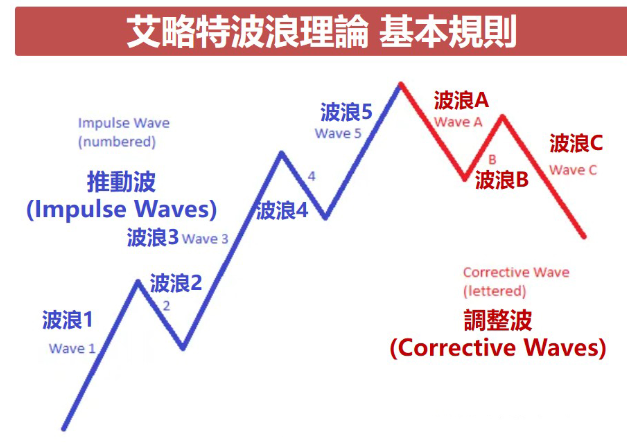
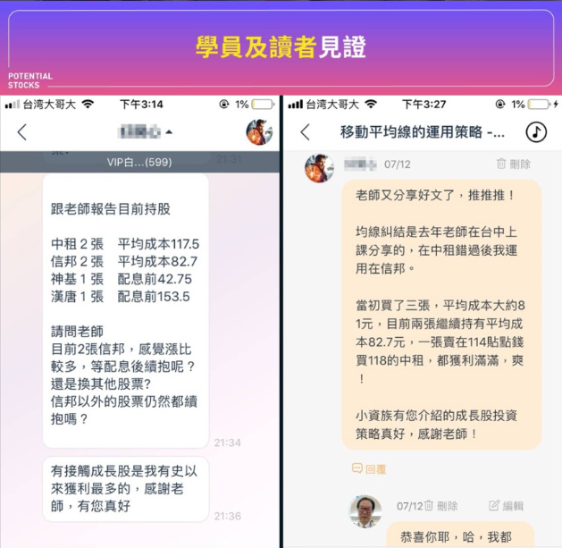
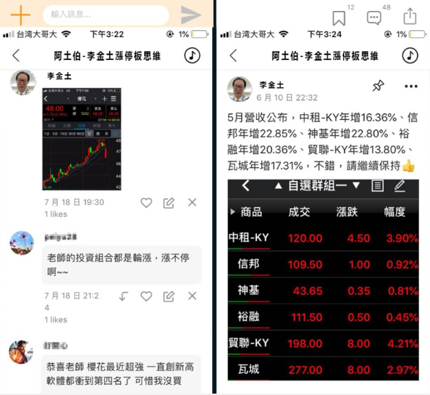
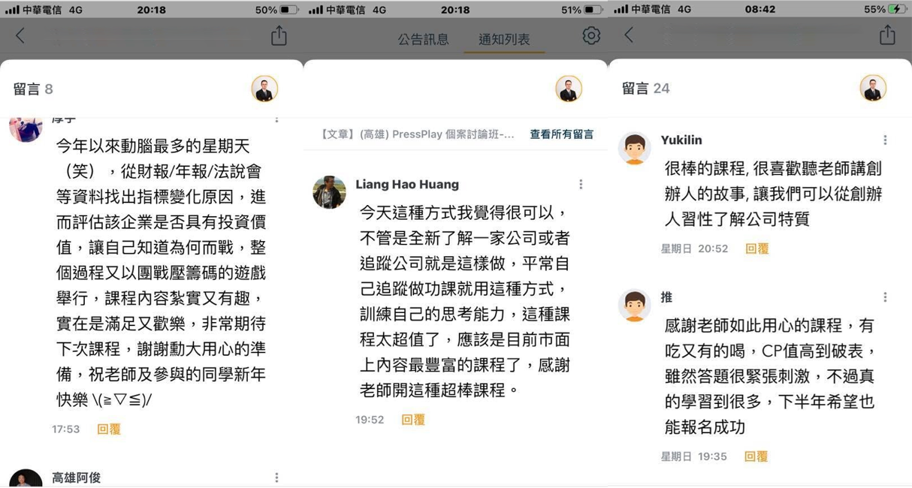
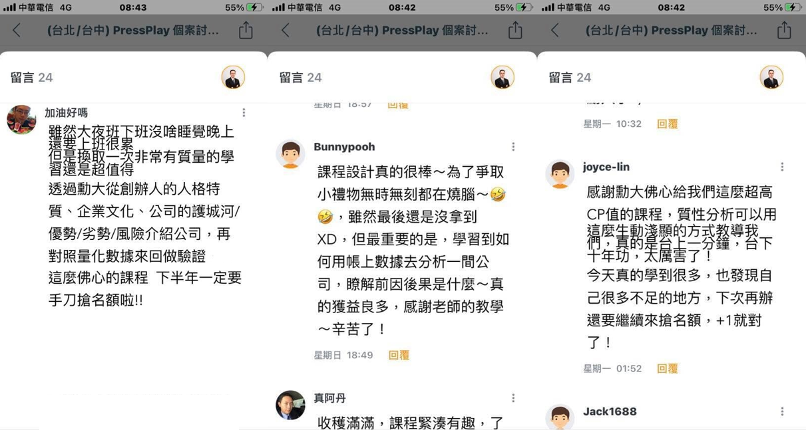
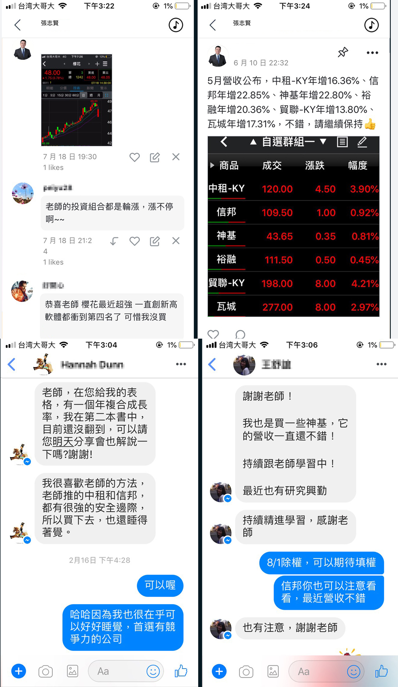
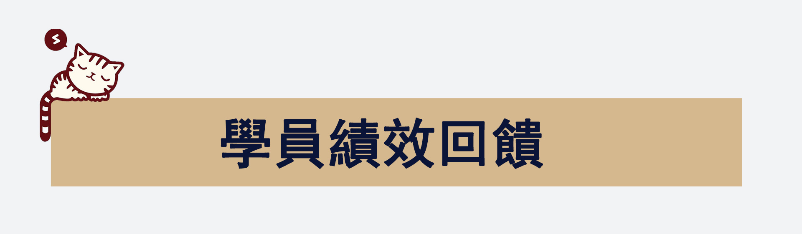
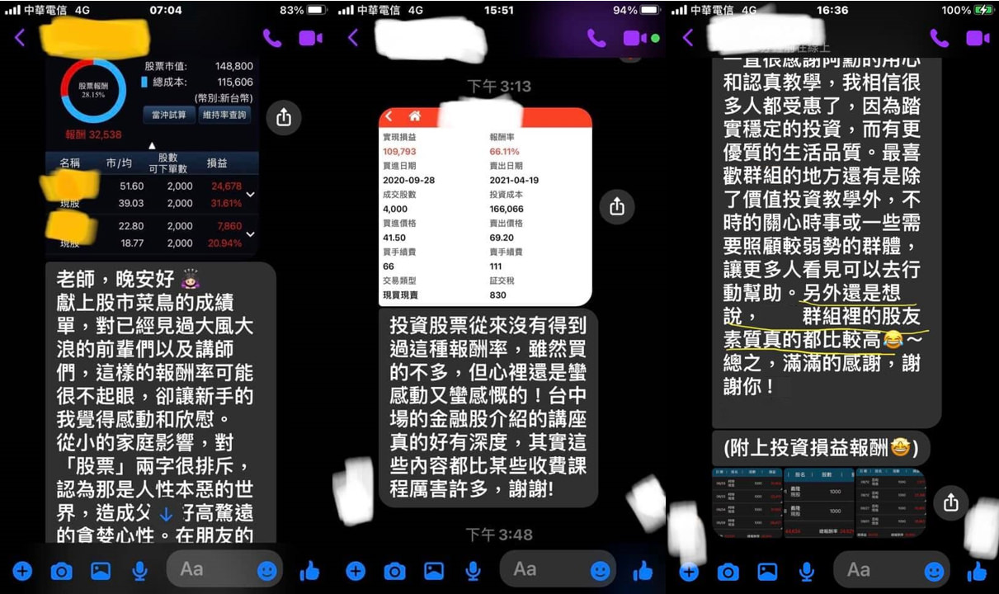
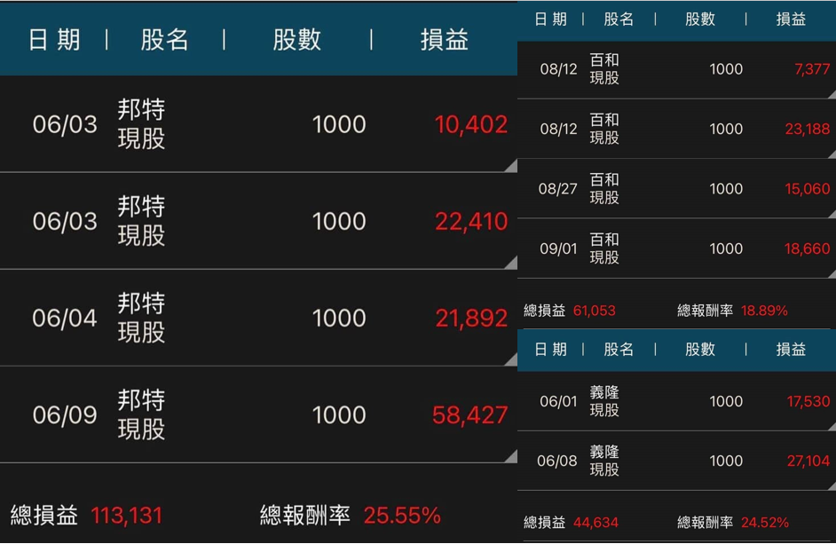

大家好，我是股民阿土伯（李金土），在股海浮沈50年，熬過金融風暴，臺股跌破4千點的黑暗期，我最高曾累積到10億元身價，但也經歷數千萬元一夕蒸發的慘痛教訓。
走過半世紀的投資經驗，現在我深深體會到「貧與貪在一點之間」的道理，如今，我求勝的準則，是挑配息5％以上的大型股長線布局，繼續再戰股海。
大家都知道我持有鴻海的股票，但其實我除了鴻海，還持有聯電、彩晶跟友訊，聯電之前最多的時候還曾經到三百多張。我選股票除了挑大型股外，還看重經營者的品德。我也曾經因為一家電子公司作假賬而血虧2千多萬
經歷過股海的浮浮沈沈，我總結出自己選股的4大標準，包括經營者品德、產業前景、大型企業以及10年配息是否表現穩定。從過去的失敗中，領悟到「穩定獲利」的重要性，專攻長期投資，選擇10年內穩定配息，且近5年平均殖利率高於5％的公司。這些選股標準，也讓我的資產開始有增無減
趨勢就在技術分析裏先觀察平均成交量
觀察盤勢首先要看成交量─平均成交量，而非單一日成交量，假設某檔股票平均成交量在三千張，如果在一段時間平均成交量超過五千張或八千張，就表示需求已經上來。股票和房地產都有需求，股票的好處，就是把無形的勢化為有形的圖可以觀察，當你發現這一檔股票需求(勢)稍微有點起來時，就有可能是強勢股或是未來的明星產業。
看懂實際面順勢而為思考如何看到未來
能否成為趨勢，在於有沒有看到量能(需求)，而此量能是否能在市場上引起共鳴，「量能就像海浪一波接一波」，強勢股的特征是有很多投資人蜂擁而入，或大量溫和地投入市場，反面來說，很多投資人長時間認定的好股票，卻沒有在市場上產生共鳴，結果是買的股票永遠躺平不漲。

所以我們學技術分析，就是希望能夠在股票市場裏面，掌握大概率，然後再更精細地方去註意、去掌握，這樣才能夠在股票市場裏產生你的被動收入，擁有自由人生。








．用最清楚的籌碼抓住主力大戶!
．用最簡單的技術分析預判股價!
．用最淺白的文章看懂總體經濟!
助你走上投資獲利的直線大道。
你可能缺少一套好懂的投資方法！
具有法人操盤手經驗的我，或許可以協助到你！